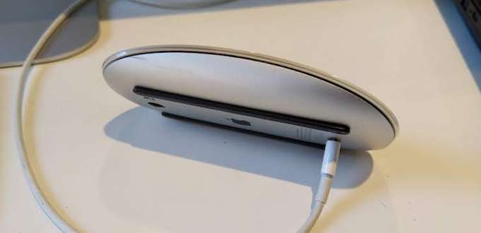

About
Mario's Lab is Mario Zechner's little experimental hide-out on the interwebs. I let my brain loose on technology and music, and summarize my findings here. You may know me from projects such as libGDX, Beginning Android Games, or RoboVM. If you are interested in any of these projecs, hop over to my old blog (archived). Here you'll only read about my new endevours.
Recent Posts RSS
-
{{i = 0}}
{{for file in sortFiles(listFiles("posts/", true, true), "date", false)}}
{{i = i + 1}}
{{if (i > 5) break end}}
{{if file.metadata.published == false continue end}}
- {{formatDate("MMM dd, yyyy", file.metadata["date"])}} - {{file.metadata.title}} {{end}}
View all posts >
Web graph
Kind of like a web ring, but cooler. Cause it's a graph!
- The Brain Dump: Wizard Andre Weissflog shows you his wonderfully magical world of cross-platform rendering, game development, emulation, and occassionally tells everyone to just use C.
- Samskivert: Michael Bayne complains about everything.
- /code/disaster: Daniel Ludwig will eventually post something about video games, graphics programming and software development in general.
- gpfault: Nicebyte speaks Russian, Armenian, English and C++.
Projects
{{i = 0}} {{include "projects/_projects.bt.txt"}} {{for project in projects}} {{i = i + 1}} {{if (i > 5) break end}}
{{project.title}}
{{end}}
{{project.description}}